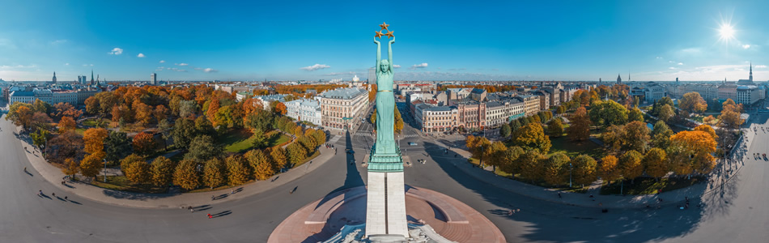

Analysis
The street names serve as daily reminders of the city's history, and they are directly embedded in the urban landscape. It evokes a sense of territoriality deeply embedded in social relations and takes the form of textual, visual and performative representations in response to political changes, crises, conflicts, wars, national-level celebrations and commemorative events. Street names bring the residents of the city face-to-face with history and historical figures every day, simply by interacting with the spaces. So, it does shape identity in the sense that if everyday individuals of society come across a name associated with a Latvian folklorist, for example, a person is inherently more aware of their significance and their work, which contributes to a sense of a common past and common values in the shared spaces. Renaming streets often emerges as a consequence of social practices and processes rather than being a purely natural phenomenon. It reinforces the narrative and values a community chooses to remember and celebrate.
Street renaming has a close link to historical memory, and the renaming process has a two-fold effect on a city's streetscape. First, it eradicates the old name, thereby aiming to decommemorate the historical event and region. Second, it establishes a new commemorative place. It is common practice in Europe to change street names when a regime change necessitates a new historiography, and societies re-evaluate, rewrite, and erase history in a sense.
Historical and spatial analysis of maps, viewed from the perspective of visual rhetoric and the contestation of space, gained prominence since the late 1980s in response to the "spatial turn." In Latvian historiography, research into street names is devoted to comprehensive encyclopedias and catalogues. These focus on the dating and origin of historical street names in the context of urban planning. However, there is a lack of comprehensive studies on street renaming as a social practice.
Historical memory on Riga streetscape
Historically, multiple historical spaces of Riga have existed simultaneously, shaped by the collective memory of society, occupation regimes, and the culture of remembrance. Street renaming in Riga's urban streetscape has primarily been a response to geopolitical changes, leaving only a small space for technical adjustments. The most dynamic changes and discussions about the historical narrative have been sparked by decommunization and the Ukrainian war, thus transforming Riga's urban landscape.

Figure 1. Dynamics of Street Renaming in Riga (1987-2025)
The sense of belonging has been revoked by renaming streets after historical figures rather than geographical symbols. Following the collapse of the Soviet Union, Riga's urban landscape gradually became decorated with the names of creative figures and politicians from the interwar period, enabling the public to commemorate individuals such as Aspazija, Aleksandrs Grīns, Kārlis Ulmanis and Jānis Čakste. Similarly, in Leipzig or Krakow, the street renaming was focused on erasing the memory of the Soviet occupation regime and its symbolism. Street renaming is inevitably the most dynamic way to change the visual and textual symbols of a city during periods of political regime change, representing its legitimacy and the new world order.

Figure 2. Street name changes recognizing contribution to society
Struggling with the consequences of the Soviet occupation, the dynamics of street renaming underwent the most significant changes in the city centre after the start of the war in Ukraine, with a focus on the city's neighbourhoods and a wider diversity of historical figures being chosen for street names, including Emīlijas Benjamiņas, Itas Kozakevičas, Hugo Celmiņa, Kārļa Mīlenbaha streets, etc. For the first few decades of regaining independence, in most cases, street names were dedicated to historical figures who had already been awarded the Order of the Three Stars and were included in the Latvian Cultural canon. Decommunization and the Ukraine war sparked an impulse for street renaming; the unchanged patterns still reflect the memory of the 19th century (First and Second National Awakening moments) and the Interwar period (1920-1940).

Figure 3. Street renaming patterns in Riga (1987-2025)